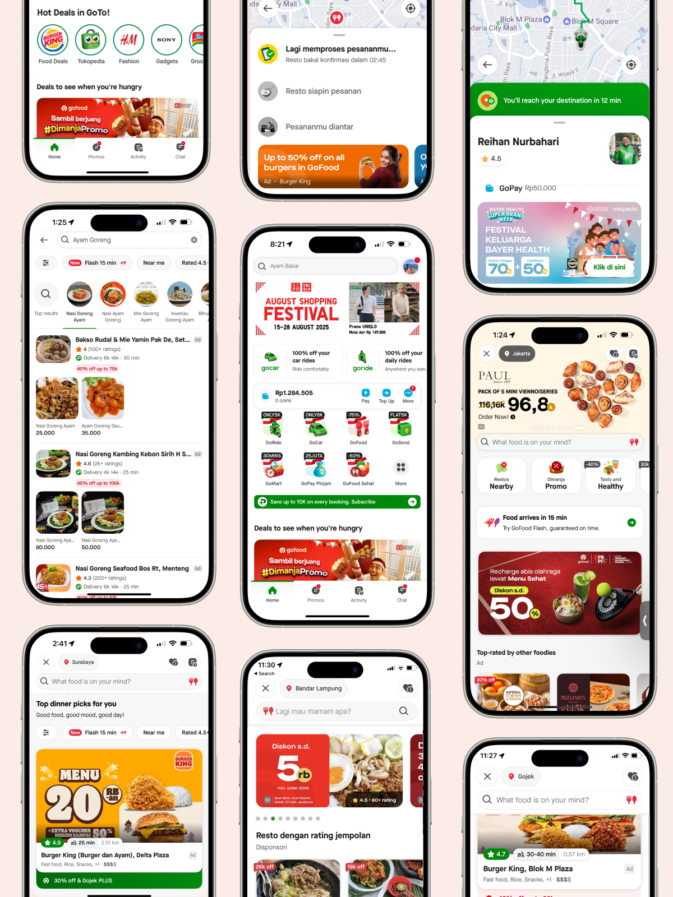
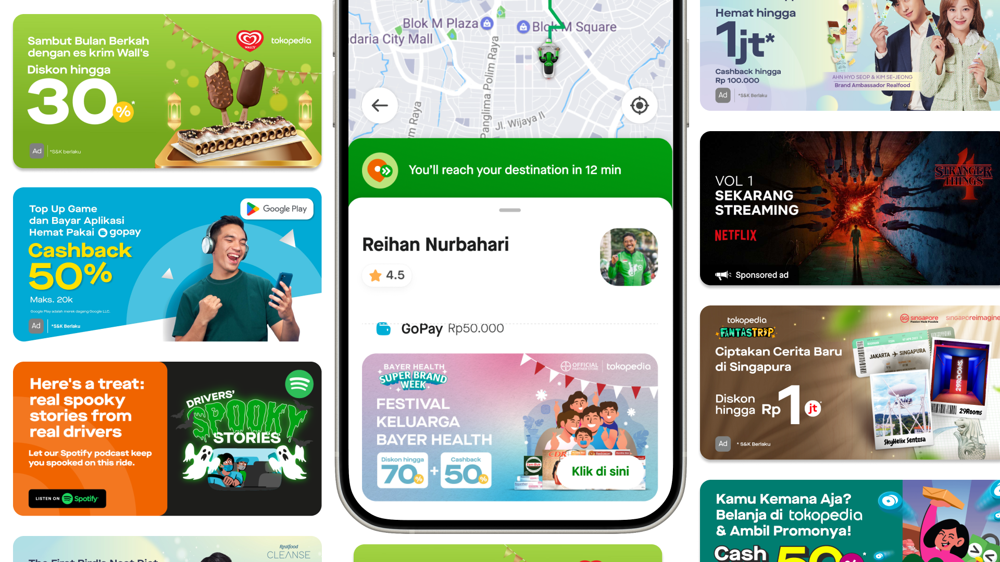
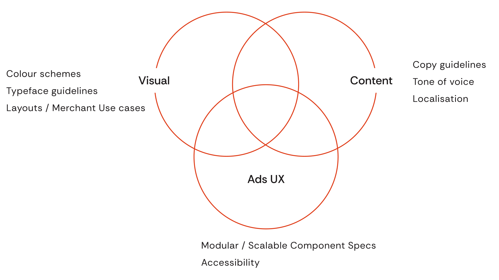
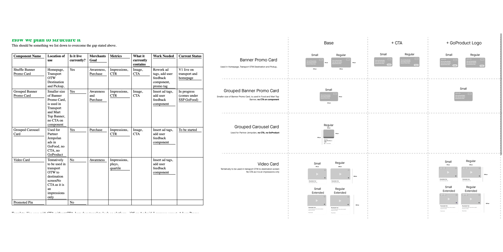
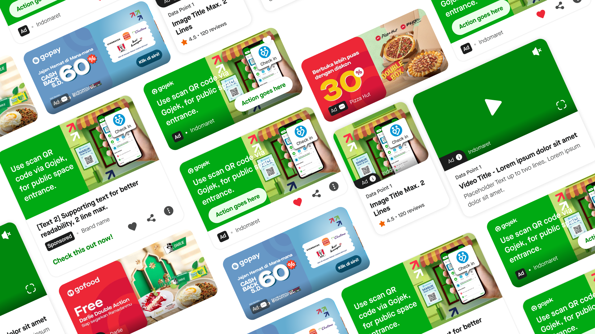
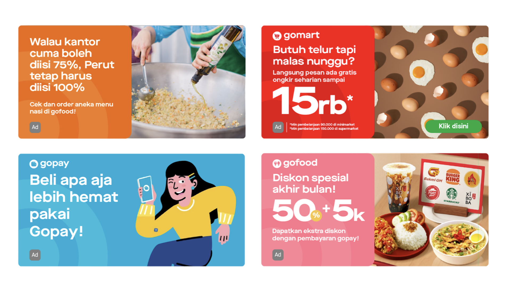
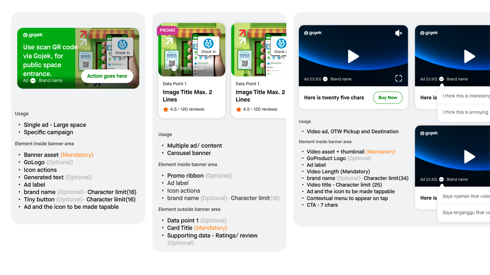
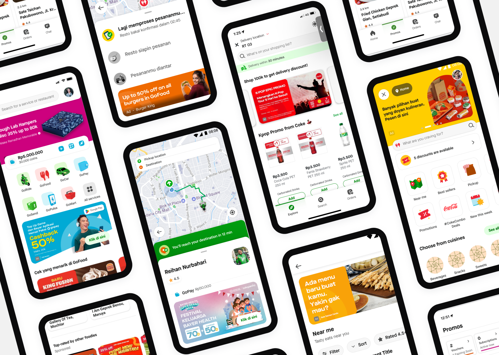

Building Gojek's ads design system
A unified component library and visual principles for all third-party advertising on Gojek, reducing launch time from weeks to days

Overview
At Gojek, I was responsible for designing consumer advertising experiences across Southeast Asia's super-app ecosystem, working at a scale of ~30 million monthly active users across Indonesia and Vietnam. My work drove $5M USD in additional revenue while maintaining user experience at the forefront. The $5M is the cumulative ads-team figure; the individual results on the Masthead and banner CTR pages roll up into it.
I collaborated with cross-functional teams spanning business, product, engineering, ad sales, and creative - often across India, Indonesia, Singapore, and Vietnam. My role required balancing merchant ROI, user experience, platform scalability, and rapid experimentation.
My work at Gojek spanned three major projects, each covered as its own case study: this ads design system, the Masthead premium ad format, and a banner CTR experiment that drove a 60% uplift in click-through rates. This page covers the design system - the foundation the other two were built on.
Building a scalable ads system

I pulled together business, IxD, copywriters, publishers, and creative designers to build one component library and one set of visual principles for all 3rd party advertising on Gojek. Nobody owned this before me, so it was a lot of herding.
The problem: long timeline to introduce ads
When I joined, setting up ad inventory was slow, chaotic and ad hoc. We'd been running ads for a few months, but every Gojek product had its own UI components and its own content guidelines. Launching anything new meant reinventing it each time.
- 1 week — Sales / acquisition
- 2 weeks — Engineering effort
- 1 week — Data / reporting
Questions with no clear answers:
- What component to use for the ad?
- What content / copy is permissible?
- What should the behaviour of the ad be?
- How does the merchant / brand create the ad from scratch?
Our vision for ads on Gojek
From a UX point of view, I wanted ads to become a core part of the Gojek user experience, not a tax on it - and a driver of business both on and off Gojek. The baseline was simple: ads should look and behave the same way everywhere in Gojek. But consistency alone wasn't the point. In an internal design workshop, we aligned on 3 principles that became the core of ads at Gojek and are still followed today.
Effective
Ads on Gojek should add value to a user's journey and job to be done while using a Gojek service
Honest
Ads on Gojek should clearly communicate the value proposition and additional actions needed to access it
Delightful
Ads on Gojek should contribute to the customer's enjoyment & satisfaction of using Gojek's services
Ads on Gojek should contain content the user is not aware of but would be delighted to explore, and be relevant to their needs either via superior targeting, or appropriate placement in the user journey.
My job was to turn that vision into a system for consumer ads.

What made this hard
Cross-cultural stakeholders
My teams were spread across India, Indonesia, Singapore, and Vietnam. Time zones and context gaps were a daily tax.
Complexity
Gojek is a huge product - ride hailing, food delivery, payments and much more. Whatever worked with one team usually fell apart with the next, so I couldn't just copy-paste an approach.
Nuance
Every ads surface had its own user context and its own merchant ROI expectations. A component that made sense in food didn't automatically make sense in transport.
Scalability
I was designing at country scale - roughly ~30 million MAUs across Indonesia and Vietnam. Small mistakes got very large very fast.
My role as product designer
My job was to keep everyone pointed at the same problem statement and get the thing shipped. In practice that meant three things:
Stakeholder management
I wrote the briefs for the design specialists on the project and managed feedback coming in from business, product, and engineering. A lot of the work was translating between them.
Ensuring quality
I made sure whatever we shipped held up to Gojek's standards - accessibility, interface quality, the details that get quietly dropped when everyone's in a hurry.
Owning the source of truth
Once the system existed, I maintained the documentation, used it in my own projects, and kept pushing other designers to actually adopt it. A system nobody uses is just a nice Figma file.
Process
First step: audited the Gojek app
I went through every existing ad placement across the Gojek ecosystem first, so I actually knew what I was systematising instead of guessing at it. That audit set the outline for the whole system.

Second step: built the UI component library
I wrote the brief for the IxD designers and iterated on the UI with them until we had reusable, modular components rather than one-offs.

Third step: Content guidelines & competitive research
I worked with creative designers on content guidelines and use cases, dug into what competitors were doing, and sat with UX writers to nail down copy principles.

Final step: Rollout & documentation
I rolled the system out inside the consumer app and kept the source of truth and documentation current for devs and other designers.
I also prototyped and tested feedback and reporting mechanisms in the app, so users had a bit more control over the ads they were seeing.

Impact & Outcomes
- Weeks → Days — Reduced launch time
- ~3 days — To onboard new ad format
- Higher ROAS — For merchants & brands
Who it actually helped
Users
Got a consistent, easy-to-understand ads experience across Gojek instead of a different-looking ad in every corner of the app.
Engineering and product
Could onboard a new ad format with minimal design and dev effort - about 3 days. They no longer needed a dedicated product designer for every new ad inventory, which was the whole point.
Merchants
Got defined templates and behaviours, so creating and running an ad stopped being a guessing game.
Gojek
Reusable templates and copy guidelines meant campaigns went live faster, and we could scale ads onto new surfaces without starting from zero each time.
